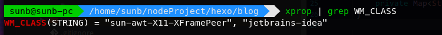
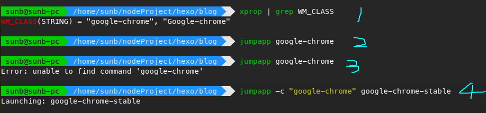

平时使用的系统的manjaro，桌面环境是xfce。打开多个程序时，通过 alt-tab来回切换非常不便，又懒的去熟悉i3wm等桌面，找来找去找到一个小巧的工具，用来切换窗口，方便了很多。
github上地址：
安装方法
Ubuntu, Debian and Friends
sudo apt-get install build-essential debhelper pandoc shunit2 |
Fedora and Friends
git clone https://github.com/mkropat/jumpapp.git |
Arch linux and Friends
yaourt -S aur/jumpapp-git |
From Source
git clone https://github.com/mkropat/jumpapp.git |
使用方法
jumpapp <应用名>
如果对应的应用已经打开了，直接把应用激活；如果没有打开，那就帮你新开一个。
然后可以把这个命令绑定到键盘上就可以了 绑定键盘快捷键就不细说了，各个桌面系统都不一样
这里说一下 应用程序的名怎么找
- 先打开app名
在命令行输入
xprop | grep WM_CLASS |
然后点击你要找那个应用，终端里边就会出现了。

一般来说，这两个名字都是可以的。
最好是自己再试一下。
还有一种情况，比如chrome，通过这种方式找的应用名， 可以激活，但是不可以帮你自动打开。可以采用以下方法：

- WM_CLASS 是google-chrome
- 如果chrome现在是开启的，能够激活，没有问题
- 如果现在chrome是关闭的，就会出错
- google-chrome-stable是chrome的启动命令，加上参数 -c，后边跟WM_CLASS ,然后指定启动命令，完美 😎️